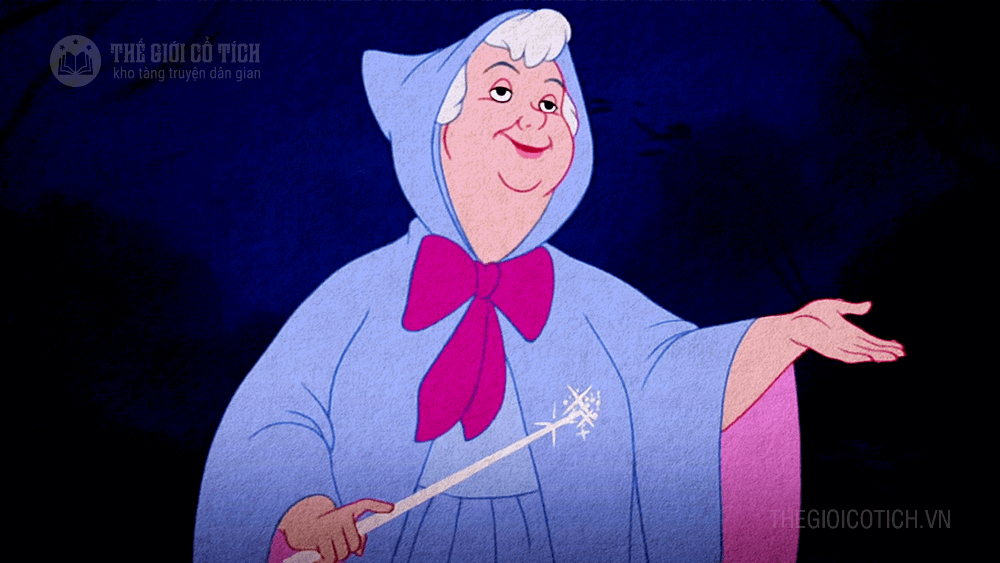
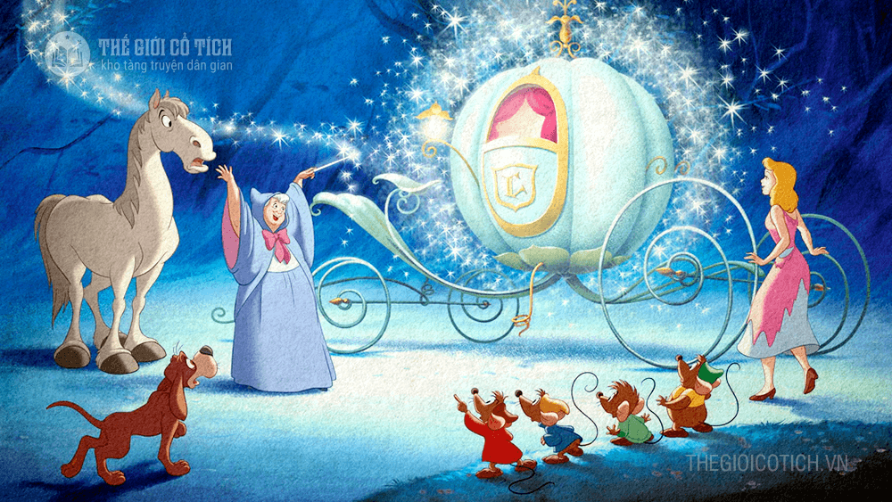

2. Một hôm, có một hoàng tử[3] trẻ tuổi tổ chức một cuộc dạ hội[4] tưng bừng ở kinh đô[5]. Hai cô em gái của Lọ Lem cũng được mới đến dự vì chẳng gì hai cô cũng là con nhà danh giá trong vùng. Sau khi trang điểm phấn son và diện những bộ áo quần thật diêm dúa[6], hai cô bước lên xe đi dạ hội. Lọ Lem chỉ còn biết ngẩn ngơ nhìn theo hai cô em cho đến lúc xe đi mất hút. Sau đó cô chạy vào trong bếp ôm mặt khóc nức nở.
Xong đâu đấy, bà quay lại nhìn Lọ Lem, rồi lấy đũa thần đập nhẹ vào bộ quần áo cũ rách, nhem nhuốc của cô đang mặc. Lập tức nó biến thành một bộ xiêm[12] áo cực kì lộng lẫy, lóng lánh đầy kim cương, vàng ngọc. Bà lại vẩy đũa một cái, đôi giày kim tuyến[13] nạm ngọc[14] xinh xắn hiện ra. Thế là mọi việc sửa soạn đã tươm tất. Tiễn Lọ Lem đi, bà tiên căn dặn cô đừng đi quá mười hai giờ khuya, vì quá giờ đó cô sẵ gặp điều chẳng lành. Lọ Lem hứa sẽ nhớ lời bà dạn và cô hớn hở bước lên cỗ xe đưa thẳng cô đến kinh đô dự hội. To be continue...
